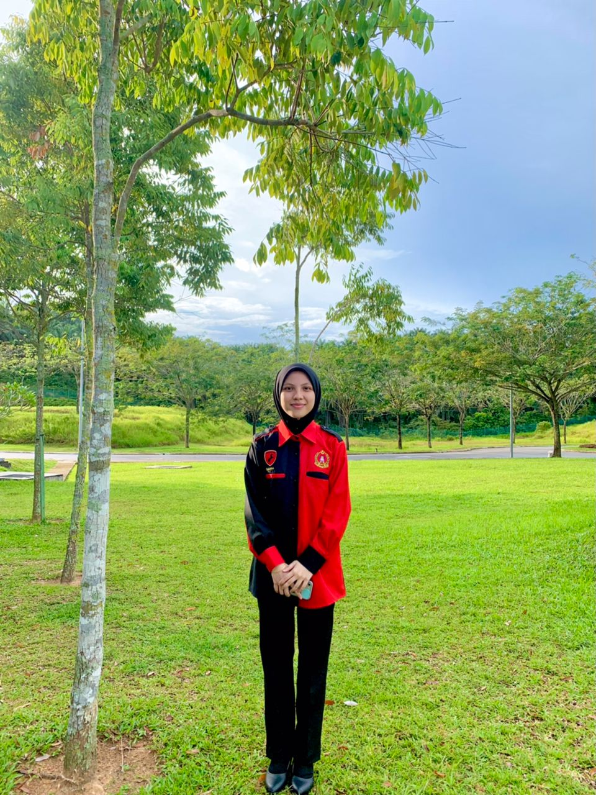

- Experience in being a Master of Ceremonies (MC)


I have experience in being a Master of Ceremony or we can known as MC for an event Majlis Destini Komander (MDK) which runs for a week. Moreover, I have experience in speaking in public. By having an experience like this, I was able to familiarize myself with my own sepaking skills and increase my courage and confidence in myself.
- Active in Association of Komander Kesatria


.jpeg) I am a member of the commanders association. Therefore, I have a lot of experiences in taking care of co-curricular classes, handling events handling a lot of work at one time. I am very happy because I have so much experience that I have gained from this association. In addition, I am also more disciplined, have a bold nature and have explored many new things.
I am a member of the commanders association. Therefore, I have a lot of experiences in taking care of co-curricular classes, handling events handling a lot of work at one time. I am very happy because I have so much experience that I have gained from this association. In addition, I am also more disciplined, have a bold nature and have explored many new things.
- Experience in Handling Event
.jpeg)
.jpeg)
.jpeg) I have a lot of experience in handling physical events such as talk, sports and also event class for my assignment. I have become accustomed to doing a lot of work at one time and I can do it as best I can. Hence, skills in work management hace also been a lot for me to learn and I was able to do all the work responsibly.
I have a lot of experience in handling physical events such as talk, sports and also event class for my assignment. I have become accustomed to doing a lot of work at one time and I can do it as best I can. Hence, skills in work management hace also been a lot for me to learn and I was able to do all the work responsibly.
I am a member of the commanders association. Therefore, I have a lot of experiences in taking care of co-curricular classes, handling events handling a lot of work at one time. I am very happy because I have so much experience that I have gained from this association. In addition, I am also more disciplined, have a bold nature and have explored many new things.
- Experience in Handling Event
I have a lot of experience in handling physical events such as talk, sports and also event class for my assignment. I have become accustomed to doing a lot of work at one time and I can do it as best I can. Hence, skills in work management hace also been a lot for me to learn and I was able to do all the work responsibly.
I have a lot of experience in handling physical events such as talk, sports and also event class for my assignment. I have become accustomed to doing a lot of work at one time and I can do it as best I can. Hence, skills in work management hace also been a lot for me to learn and I was able to do all the work responsibly.